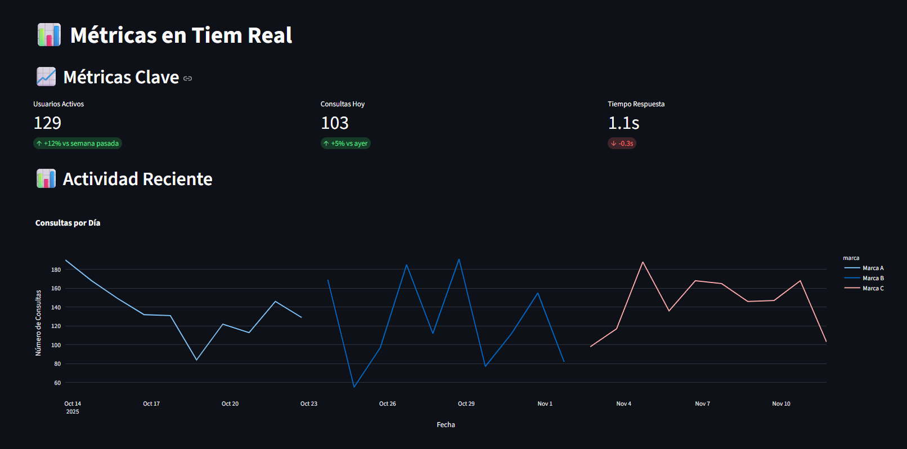
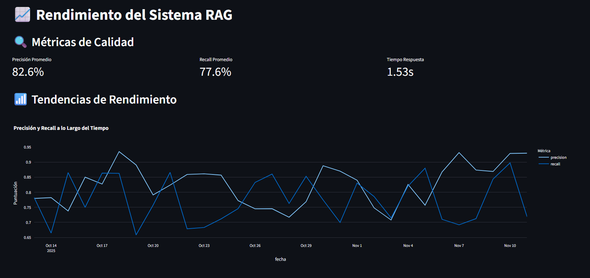

Dashboard de Análisis en Tiempo Real
Monitoreo y visualización de métricas de rendimiento para sistemas de IA
Desarrollador: Vera Guillén | Stack Principal: Streamlit, Plotly, Pandas, Python

Este proyecto consiste en un dashboard interactivo para el monitoreo en tiempo real del rendimiento de sistemas de inteligencia artificial, como el Chatbot RAG Multimarca. Permite visualizar métricas clave, analizar el comportamiento de los usuarios y obtener insights para la optimización continua.
Características Principales
- Monitoreo en Tiempo Real: Visualización de la performance del chatbot y la interacción de los usuarios.
- Análisis de Métricas: KPIs sobre la satisfacción del usuario, tasa de resolución y efectividad del RAG.
- Visualización Interactiva: Gráficos creados con Plotly para una exploración de datos dinámica.
- Filtrado Avanzado: Capacidad para segmentar datos por marca, período de tiempo y otras dimensiones.
Galería del Dashboard

